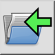

匯入…
工具列 / 圖示:


菜单: 檔案 > 匯入…
捷徑: Ctrl+Shift+I (Mac: ⇧⌘I)
命令: import
工具列 / 圖示:


匯入指令將磁碟上檔案中的圖紙插入到目前圖紙中。 匯入圖紙使用的所有圖層都將加入目前圖紙的圖層列表中。如果需要，可以覆寫同名的現有圖層（選項工具列中的「overwrite layers」選項）。 匯入圖紙的圖塊參照將與它們參照的圖塊定義一起插入。如果需要，可以覆寫目前圖紙中的圖塊（選項工具列中的「overwrite blocks」選項）。 選項工具列還提供了一些工具，用於在定位匯入圖紙時縮放、旋轉或翻轉它。
用滑鼠設定匯入圖紙的目標點，或在指令行中輸入座標。目標點對應於匯入圖紙的絕對零點。